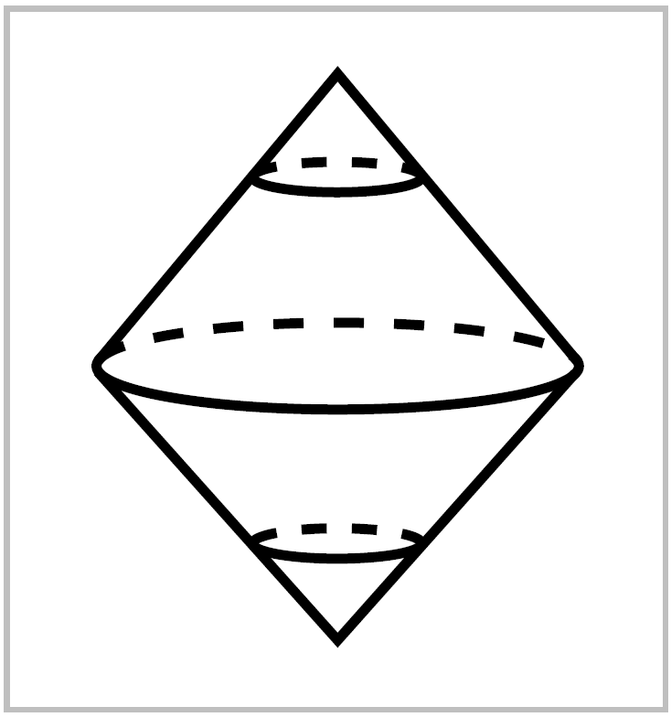
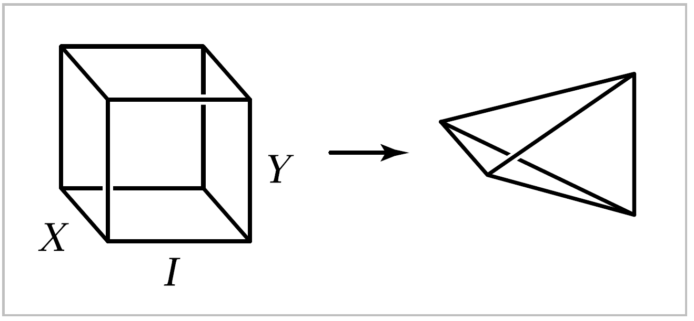

Operations on Spaces#
Cell complexes have a very nice mixture of rigidity and flexibility, with enough rigidity to allow many arguments to proceed in a combinatorial cell-by-cell fashion and enough flexibility to allow many natural constructions to be performed on them. Here are some of those constructions.
Products. If \(X\) and \(Y\) are cell complexes, then \(Y \times Y\) has the structure of a cell complex with cells the products \(e^m_\alpha \times e^n_\beta\) where \(e^m_\alpha\) ranges over the cells of \(X\) and \(e^n_\beta\) ranges over the cells of \(Y\). For example, the cell structure on the torus \(S^1 \times S^1\) described at the beginning of this section is obtained in this way from the standard cell structure on \(S^1\). For completely general CW complexes \(X\) and \(Y\) there is one small complication: The topology on \(X \times Y\) as a cell complex is sometimes finer than the prouct topology, with more open sets than the product topology has, though the two topologies coincide if either \(X\) or \(Y\) has only finitely many cells, or if both \(X\) and \(Y\) have countably many cells. This is explained in the Appendix. In practice this subtle issue of point-set topology rarely causes problems, however.
Quotients. If \((X,A)\) is a CW pair consisting of a cell complex \(X\) and a subcomples \(A\), then the quotient space \(X / A\) inherits a natural cell complex structure from \(X\). The cells of \(X/A\) are the cells of \(X-A\) plus one new \(0\)-cell, the image of \(A\) in \(X/A\). For a cell \(e^n_\alpha\) of \(X-A\) attached by \(\varphi_\alpha : S^{n-1} \rightarrow X^{n-1}\), the attaching map for the corresponding cell in \(X/A\) is the composition \(S^{n-1} \rightarrow X^{n-1}\rightarrow X^{n-1}/A^{n-1}\).
For example, if we give \(S^{n-1}\) any cell structure and build \(D^n\) from \(S^{n-1}\) by attaching an \(n\)-cell, then the quotient \(D^n / S^{n-1}\) is \(S^n\) with its usual cell structure. As another example, take \(X\) to be a closed orientable surface with the cell structure described at the beginning of this section, with a single \(2\)-cell, and let \(A\) be the complement of this \(2\)-cell, the \(1\)-skeleton of \(X\). Then \(X/A\) has a cell structure consisting of a \(0\)-cell with a \(2\)-cell attached, and there is only one way to attach a cell to a \(0\)-cell, by the constant map, so \(X/A\) is \(S^2\).
{kind=link}
Suspension. For a space \(X\), the suspension SX is the quotient of \(X \times I\) obtained by collapsing \(X\times\{0\}\) to one point and \(X\times\{1\}\) to another point. The motivating example is \(X=S^n\), when \(SX=S^{n+1}\) with the two ‘suspension points’ at the north and south poles of \(S^{n+1}\), the points \((0, \cdots, 0, \pm 1)\). One can regard \(SX\) as a double cone on \(X\), the union of two copies ofthe cone \(CX=(X\times I) / (X\times \{0\})\). If \(X\) is a CW complex, so are \(SX\) and \(CX\) as aquotients of \(X \times I\) with its product cell structure, \(I\) being given the standard cell structure of two \(0\)-cells joined by a \(1\)-cell.
Suspension becomes increasingly important the farther one goes into algebraic topology, though why this should be so is certainly not evident in advance. One especially useful property of suspension is that not only spaces but also maps can be suspended. Namely, a mpa \(f:X\rightarrow Y\) suspends to \(Sf:SX \rightarrow SY\), the quotient map of \(f\times \mathbb{1}: X \times I \rightarrow Y \times I\).
Join. The cone \(CX\) is the union of all line segments joining points of \(X\) to an external vertex, and similarly the suspension \(SX\) is the union of all line segments joining points of \(x\) to two external vertices. More generally, given \(X\) and a second space \(Y\), one can define the space of all line segments joining points in \(X\) to points in \(Y\). This is the join \(X * Y\), the quotient space of \(X \times Y \times I\) under the identifications \((x, y_1, 0) \sim (x, y_2, 0)\) and \((x_1,y,1) \sim (x_2, y, 1)\). Thus we are collapsing the subspace \(X \times Y \times \{0\}\) to \(X\) and \(X \times Y \times \{1\}\) to \(Y\).
{kind=link}
For example, if \(X\) and \(Y\) are both closed intervals, then we are collapsing two opposite faces of a cube onto line segments so that the cube becomes a tetrahedron. In the general case, \(X * Y\) contains copies of \(X\) and \(Y\) at its two ends, and every other point \((x,y,t)\) in \(X * Y\) is on a unique line segment joining the point \(x \in X \subset X*Y\) to the point \(y \in Y \subset X*Y\), the segment obtained by fixing \(x\) and \(y\) and letting the coordinate \(t\) in \((x,y,t)\) vary.
A nice way to write points of \(X * Y\) is as formal linear combinations \(t_1x+t_2y\) with \(0 \leq t_i \leq 1\) and \(t_1 + t_2 = 1\), subject to the rules \(0x+1y=y\) and \(1x+0y=x\) that correspond exactly to the identifications defining \(X*Y\). In much the same way, an iterated join \(X_1 * \cdots X_n\) can be constructued as the space of formal linear combinations \(t_1x_1+\cdots t_nx_n\) with \(0\leq t_i \leq 1\) and \(t_1 + \cdots +t_n=1\), with the convenction that terms \(0x_i\) can be omitted. A very special case that plays a central role in algebraic topology is when each \(X_i\) is just a point. For example, the join of two points is a line segment, the join of three points is a triangle, and the join of four points is a tetrahedron. In general, the join of \(n\) points is a convex polyhedron of dimension \(n-1\) is called a simplex. Concretely, if the \(n\) points are the \(n\) standard basis vectors for \(\mathbb{R}^n\), then their join is the \((n-1)\)-dimensional simplex
Another interesting examples is when each \(X_i\) is \(S^0\), two points. If we take the two points of \(X_i\) to be the two unit vectors along the \(i^{th}\) coordinate axis in \(\mathbb{R}^n\), then the join \(X_1 * \cdots *X_n\) is the union of \(2^n\) copies of the simplex \(\Delta^{n-1}\), and radial projection from the origin gives a homeomorphism between \(X_1 * \cdots X_n\) and \(S^{n-1}\).
If \(X\) and \(Y\) are CW complexes, then there is a natural CW structure on \(X*Y\) having the subspaces \(X\) and \(Y\) as subcomplexes, with the remaining cells being the product cells of \(X \times Y \times (0,1)\). As usual with products, the CW topology on \(X * Y\) may be finer than the quotient of the product topology on \(X \times Y \times I\).
Wedge Sum. This is a rather trivial but still quite useful operation. Given spaces \(X\) and \(Y\) with chosen points \(x_0 \in X\) and \(y_0 \in Y\), then the wedge sum \(X \vee Y\) is the quotient of the disjoint union \(X \sqcup Y\) obtained by identifying \(x_0\) and \(y_0\) to a single point. For example, \(S^1 \vee S^1\) is homeomorphic to the figure ‘\(8\)’, two circles touching at a point. More generally one could form the wedge sum \(\bigvee _\alpha X_\alpha\) of an arbitrary collection of spaces \(X_\alpha\) by starting with the disjoint union \(\bigsqcup _\alpha X_\alpha\) and identifying points \(x_\alpha \in X_\alpha\) to a single point. In case the spaces \(X_\alpha\) are cell complexes and the points \(x_\alpha\) are \(0\)-cells, then \(\bigvee_\alpha X_\alpha\) is a cell complex since it is obtained from the cell complex \(\bigsqcup_\alpha X_\alpha\) by collapsing a subcomplex to a point.
For any cell complex \(X\), the quotient \(X^n / X^{n-1}\) is a wedge sum of \(n\)-spheres \(\bigvee_\alpha S^n_\alpha\), with one sphere for each \(n\)-cell of \(X\).
Smash Product. Like suspension, this is another construction whose importance becomes evident only later. Inside a product space \(X \times Y\) there are copies of \(X\) and \(Y\), namely \(X \times \{y_0\}\) and \(\{x_0\} \times Y\) for points \(x_0 \in X\) and \(y_0 \in Y\). These two copies of \(X\) and \(Y\) in \(X \times Y\) intersect only at the point \((x_0, y_0)\), so their union can be identified with the wedge sum \(X \vee Y\). The smash product \(X \wedge Y\) is then defined to be the quotient \(X \times Y / X \vee Y\). One can think of \(X \wedge Y\) as a reduced version of \(X \times Y\) obtained by collapsing away the parts that are not genuinely a product, the separate factors \(X\) and \(Y\).
The smash product \(X \wedge Y\) is a cell complex if \(X\) and \(Y\) are cell complexes with \(x_0\) and \(y_0\) \(0\)-cells, assuming that we give \(X \times Y\) the cell-complex topology rather than the product topology in cases when these two topologies differ. For example, \(S^m \wedge S^n\) has a cell structure with just two cells, of dimensions \(0\) and \(m+n\), hence \(S^m \wedge S^n = S^{m+n}\). In particular, when \(m=n=1\) we see that collapsing longitude and meridian circles of a torus to a point produces a \(2\)-sphere.